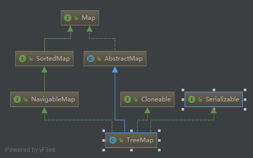

初印象：可以排序的Map
不同于LinkedHashMap继承于HashMap,TreeMap和HashMap处于继承树的同一级

1、构造函数
/**
* A Red-Black tree based {@link NavigableMap} implementation.（基于红黑树）
* The map is sorted according to the {@linkplain Comparable natural
* ordering} of its keys, or by a {@link Comparator} provided at map（根据key的自然顺序或者给定的排序器）
* creation time, depending on which constructor is used.
public class TreeMap<K,V>
extends AbstractMap<K,V>
implements NavigableMap<K,V>, Cloneable, java.io.Serializable
{
/**
* The comparator used to maintain order in this tree map, or
* null if it uses the natural ordering of its keys.
*
* @serial
*/
private final Comparator<? super K> comparator;
private transient Entry<K,V> root;//根节点
提供了三个构造函数
public TreeMap() {
comparator = null;
}
public TreeMap(Comparator<? super K> comparator) {
this.comparator = comparator;
}
public TreeMap(Map<? extends K, ? extends V> m) {
comparator = null;
putAll(m);
}
第一个第二个区别是第二个传入了一个比较器
上面看到了根节点的类型时Entry，看一下Entry结构，此处的Entry不再是个接口，而是个实体类
static final class Entry<K,V> implements Map.Entry<K,V> {
K key;
V value;
Entry<K,V> left;
Entry<K,V> right;
Entry<K,V> parent;
boolean color = BLACK;
Entry(K key, V value, Entry<K,V> parent) {
this.key = key;
this.value = value;
this.parent = parent;
}
public K getKey() {
return key;
}
public V getValue() {
return value;
}
public V setValue(V value) {
V oldValue = this.value;
this.value = value;
return oldValue;
}
public boolean equals(Object o) {
if (!(o instanceof Map.Entry))
return false;
Map.Entry<?,?> e = (Map.Entry<?,?>)o;
return valEquals(key,e.getKey()) && valEquals(value,e.getValue());
}
//加亮表强调，此处用的是key的hash码和value的hash码相异或
public int hashCode() {
int keyHash = (key==null ? 0 : key.hashCode());
int valueHash = (value==null ? 0 : value.hashCode());
return keyHash ^ valueHash;
}
public String toString() {
return key + "=" + value;
}
}
左右指针父指针，典型的树节点结构，还有一个颜色，默认值是黑色，红黑树节点实锤了
2、数据存储
public V put(K key, V value) {
Entry<K,V> t = root;
if (t == null) {
compare(key, key); // type (and possibly null) check
root = new Entry<>(key, value, null);
size = 1;
modCount++;
return null;
}
int cmp;
Entry<K,V> parent;
// split comparator and comparable paths
Comparator<? super K> cpr = comparator;
if (cpr != null) {
//从根节点开始，如果大于结点值则从右子树遍历，小于则从左子树遍历，相等说明是重复存入，修改值后直接返回。
do {
parent = t;
cmp = cpr.compare(key, t.key);
if (cmp < 0)
t = t.left;
else if (cmp > 0)
t = t.right;
else
return t.setValue(value);
} while (t != null);
}
//else中的操作和上面相同，只是此处使用的是key的比较器
else {
if (key == null)
throw new NullPointerException();
@SuppressWarnings("unchecked")
Comparable<? super K> k = (Comparable<? super K>) key;
do {
parent = t;
cmp = k.compareTo(t.key);
if (cmp < 0)
t = t.left;
else if (cmp > 0)
t = t.right;
else
return t.setValue(value);
} while (t != null);
}
Entry<K,V> e = new Entry<>(key, value, parent);
if (cmp < 0)
parent.left = e;
else
parent.right = e;
//红黑树的平衡操作
fixAfterInsertion(e);
size++;
modCount++;
return null;
}
根节点为空时调用了compare方法，自己跟自己比较有什么意义？暂未想到，那就继续看
//TreeMap构造器中指定了比较器则使用指定的，没指定则使用key的比较器
final int compare(Object k1, Object k2) {
return comparator==null ? ((Comparable<? super K>)k1).compareTo((K)k2)
: comparator.compare((K)k1, (K)k2);
}
按照上面的代码逻辑，如果构造器不指定比较器，key也没有比较器，岂不是会空指针？
写个例子测试一下：
public class TreeMapTest {
public void test(){
TreeMap<Key,Object> map=new TreeMap<>();
map.put(new Key(1),null);
}
private class Key{
int val;
public Key(int val){
this.val=val;
}
}
public static void main(String[] args){
TreeMapTest t=new TreeMapTest();
t.test();
}
}
果然运行异常，但不是空指针异常，而是类型转换异常。仔细看先上面的compare方法，先是类型强转才调用方法，确实应该是类型转换异常；且该方法调用后有行简单的注释，类型和空指针检查；说白了就是比较器的合法性检测，如果有问题让它再第一次存储数据时就抛出异常；如果没有这个比较，这个异常会到后面添加数据时才抛出，显然是不合适的。
平地起惊雷，我辈之楷模。
Exception in thread "main" java.lang.ClassCastException: com.si.jdk.TreeMapTest$Key cannot be cast to java.lang.Comparable
at java.util.TreeMap.compare(TreeMap.java:1294)
at java.util.TreeMap.put(TreeMap.java:538)
at com.si.jdk.TreeMapTest.test(TreeMapTest.java:12)
at com.si.jdk.TreeMapTest.main(TreeMapTest.java:8)
修改下内部类，让它实现构造器接口，再次运行，果然正常。
private class Key implements Comparable<Key>{
int val;
public Key(int val){
this.val=val;
}
@Override
public int compareTo(Key o) {
return 0;
}
}
private void fixAfterInsertion(Entry<K,V> x) {
x.color = RED;//新插入结点为红色结点
//父节点红色
while (x != null && x != root && x.parent.color == RED) {
//父节点是祖父结点的左孩子
if (parentOf(x) == leftOf(parentOf(parentOf(x)))) {
Entry<K,V> y = rightOf(parentOf(parentOf(x)));//右边的叔父结点
//这是最简单的情况
if (colorOf(y) == RED) {//叔父结点为红色
//父节点和叔父结点都变为黑色，祖父结点变为红色
setColor(parentOf(x), BLACK);
setColor(y, BLACK);
setColor(parentOf(parentOf(x)), RED);
x = parentOf(parentOf(x));//x指向了祖父结点
} else {//叔父结点为黑色
//此为左右情况，先左旋变成左左情况
if (x == rightOf(parentOf(x))) {
x = parentOf(x);
rotateLeft(x);
}
//左左情况，父节点变黑，祖父变红，右旋
setColor(parentOf(x), BLACK);
setColor(parentOf(parentOf(x)), RED);
rotateRight(parentOf(parentOf(x)));
}
} else {//父节点是祖父结点的右孩子，这种情况是上面if情况的镜像，不再赘述
Entry<K,V> y = leftOf(parentOf(parentOf(x)));
if (colorOf(y) == RED) {
setColor(parentOf(x), BLACK);
setColor(y, BLACK);
setColor(parentOf(parentOf(x)), RED);
x = parentOf(parentOf(x));
} else {
if (x == leftOf(parentOf(x))) {
x = parentOf(x);
rotateRight(x);
}
setColor(parentOf(x), BLACK);
setColor(parentOf(parentOf(x)), RED);
rotateLeft(parentOf(parentOf(x)));
}
}
}
root.color = BLACK;
}
貌似能看懂，哈哈
3、遍历
已经构建好了红黑树，可以猜测所谓的按顺序遍历无非就是平衡二叉树的中序遍历。
还是HashMap迭代器的套路，过程不多着笔墨，要看的核心是最后的successor方法
public Set<Map.Entry<K,V>> entrySet() {
EntrySet es = entrySet;
return (es != null) ? es : (entrySet = new EntrySet());
}
class EntrySet extends AbstractSet<Map.Entry<K,V>> {
public Iterator<Map.Entry<K,V>> iterator() {
return new EntryIterator(getFirstEntry());
}
final class EntryIterator extends PrivateEntryIterator<Map.Entry<K,V>> {
EntryIterator(Entry<K,V> first) {
super(first);
}
public Map.Entry<K,V> next() {
return nextEntry();
}
}
abstract class PrivateEntryIterator<T> implements Iterator<T> {
Entry<K,V> next;
Entry<K,V> lastReturned;
int expectedModCount;
PrivateEntryIterator(Entry<K,V> first) {
expectedModCount = modCount;
lastReturned = null;
next = first;
}
public final boolean hasNext() {
return next != null;
}
final Entry<K,V> nextEntry() {
Entry<K,V> e = next;
if (e == null)
throw new NoSuchElementException();
if (modCount != expectedModCount)
throw new ConcurrentModificationException();
next = successor(e);
lastReturned = e;
return e;
}
看看实际干活的successor方法
static <K,V> TreeMap.Entry<K,V> successor(Entry<K,V> t) {
if (t == null)
return null;
//下一个结点应该是当前节点右子树的最左结点（其实就是中序遍历）
else if (t.right != null) {
Entry<K,V> p = t.right;
while (p.left != null)
p = p.left;
return p;
} else {//右子树为空，下一结点就是父节点
Entry<K,V> p = t.parent;
Entry<K,V> ch = t;
while (p != null && ch == p.right) {
ch = p;
p = p.parent;
}
return p;
}
}